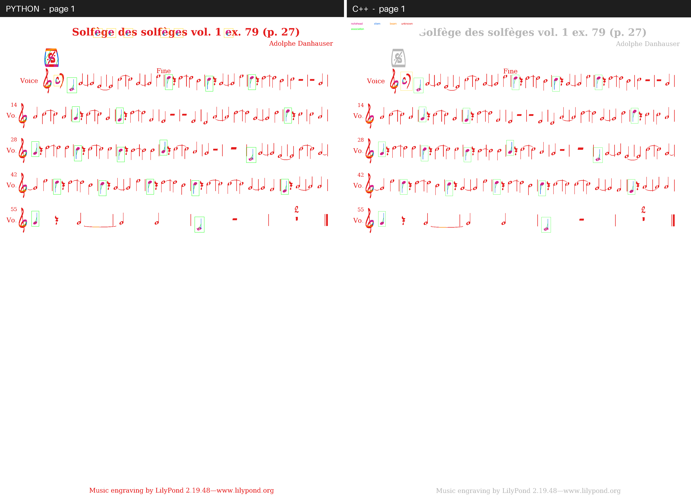
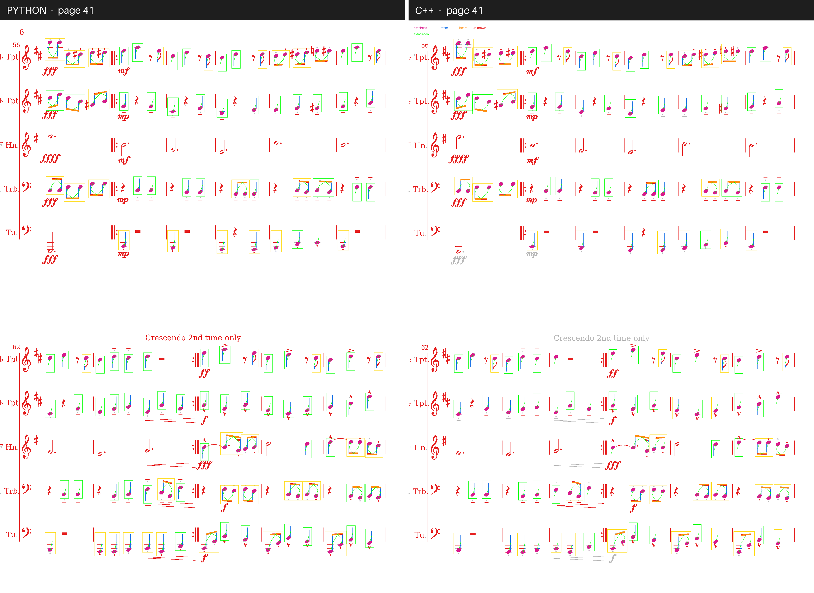
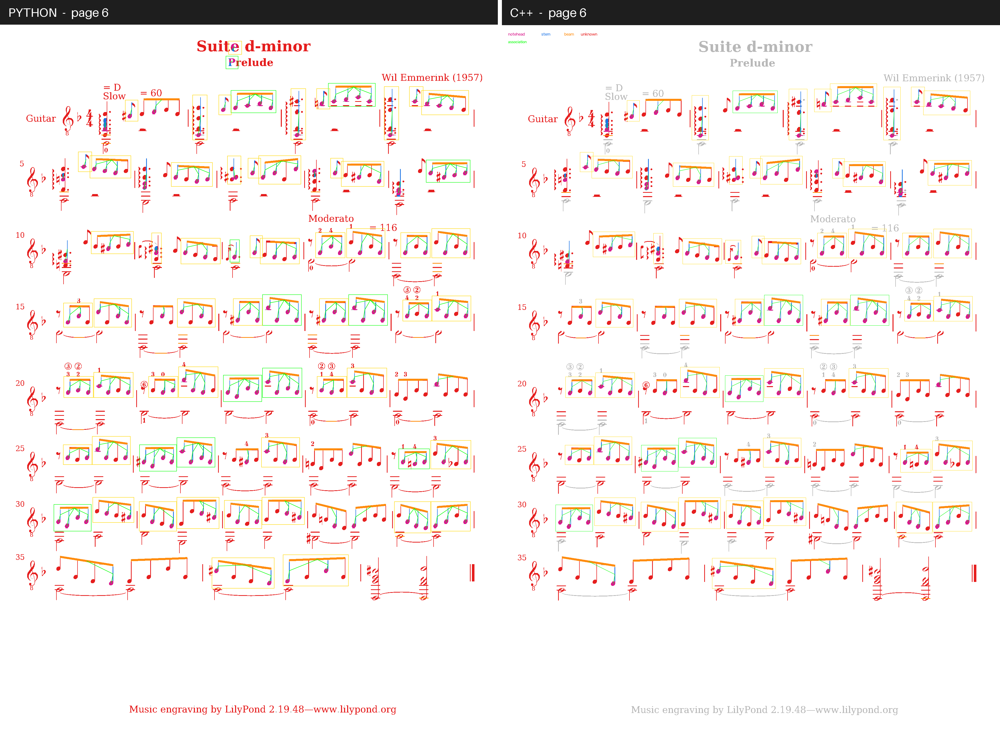

An end-to-end Optical Music Recognition (OMR) pipeline: from a printed score image to a playable MIDI file, with a Python reference implementation and a hand-rolled C++ port.
Optical Music Recognition (OMR) converts printed or handwritten scores into machine-readable formats. Classical OMR pipelines, following Rebelo et al., split into four stages: image preprocessing, symbol recognition, musical information reconstruction, and notation encoding.
This project implements that pipeline from scratch, evaluated on the DeepScoresV2 dense subset (CC BY 4.0). The scope is deliberately restricted to filled quarter notes and beamed eighth notes (blacks and croches) plus their stems and beams. Clefs, key signatures, accidentals, rests, flags, open noteheads, and grace heads are out of scope — this restriction came from concrete obstacles (staves split open noteheads into two arcs; descriptors are unstable on those fragments).
Four written reports (in French) sit under reports/: state of the art, evaluation methodology, methods, and results. This page summarizes the work in English, plus the later C++ port.
Mask, primitives, graph types, splitter scaffolding.After staff removal, each connected component is decomposed into primitives by morphological opening with tailored structuring elements, in order:
Residual ink becomes unknown. A component is ACCEPTED if topology is valid (one head per stem, a beam joins ≥2 stems), UNCERTAIN if valid but with unexplained ink, REJECTED otherwise.
Classification covers four DeepScores categories: noteheadBlackOnLine, noteheadBlackInSpace, stem, beam. The OnLine/InSpace distinction is geometric (head center vs detected staff lines), so no trained classifier is needed — this is exactly why scope was narrowed to filled heads.
The score is modeled as a notation graph. Three rewrite rules applied to fixpoint, in the tradition of Fahmy and Blostein:
NOTE.BEAMED_GROUP.Edges HEAD_TO_STEM and STEM_TO_BEAM come from the splitter; spatial ABOVE and ALIGNED_VERTICAL are added by pairwise node traversal. Duration is structural (filled head + stem without beam = quarter; filled heads joined by a beam = eighths). Pitch is geometric (head vertical position in half-staff-lines above the bottom line, converted to a diatonic degree; clef assumed treble, which holds thanks to clean-page selection).
Output is monophonic format-0 SMF, 480 PPQ, 120 BPM. Each note fires then releases when its duration elapses; no overlap, no explicit rests. Expressive formats (MusicXML, MEI) are out of scope.
The pipeline processes a score page not as one image but as a set of crops, each fed to the splitter. How those crops are chosen is a methodological question of its own, and our answer changed over the project.
Crop discovery was a problem we initially did not have time or a clear idea to solve well, so we took a shortcut: seed crops from the DeepScores annotations themselves. The dataset class exposed iter_supported_crops, which walked the per-page annotation list, built a proximity graph across annotations, and grouped nearby supported annotations (noteheads + their associated stems/beams) into one compound crop. Pixels were then cropped around each compound's bounding box.
This was convenient — the ground truth guaranteed every crop carried something to find, which made measuring the splitter, detector, and classifier in isolation easy. But it is cheating in an OMR sense: a real system does not have the annotation file. Using GT to choose what to feed the pipeline meant upstream failures (missing a symbol entirely) were invisible to the benchmark, so the numbers did not reflect real-world behavior. The standalone splitting_eval.py and midi_export.py still use this path, but the main pipeline no longer does.
Once the core pipeline was stable, we went back and replaced the shortcut with our own inference-free crop discovery. The main pipeline (pipeline_eval, both Python and C++) now uses inference_page_compounds (Python) / discover_page_crops (C++), which reads page pixels only:
0.08 · staff_space² on connected components.0.2 · staff_space.2.0 · staff_space from every detected staff row.0.6 · staff_space around the final crop.Reports carry "inference_ground_truth_free": true and "crop_discovery": "image_connected_components". Ground truth is loaded only after prediction, only to score the full-page result. A missed symbol now correctly lowers recall; a spurious crop correctly lowers precision.
This change applies to both the Python reference and the C++ port; it is the last methodological step of the project.
The earlier written results report (Livrable 4) was produced with GT-based crops; the current run is fully inference-free. Comparing the two makes the cost of the shortcut visible:
| Metric | GT-based crops (old) | Inference-free (current) |
|---|---|---|
| mAP @0.3 | 0.6445 | 0.5154 |
| Accuracy | 0.9309 | 0.8847 |
| Edge F1 | 0.4001 | 0.3346 |
| Duration SER | 0.1105 | 0.4175 |
| Pitch SER | 0.3783 | 0.6039 |
Each pipeline stage has its own metric, so a regression can be localized exactly.
| Metric | Stage | What it localizes |
|---|---|---|
| Mask P/R/F1 @IoU | splitting | pixel-level primitive segmentation |
| mAP @IoU | detection | bbox-level detection |
| Accuracy + confusion matrix | classification | OnLine/InSpace + stem + beam |
| Edge P/R/F1 | reconstruction | head-to-stem and stem-to-beam pairing |
| Duration SER | end-to-end | quarter/eighth sequence vs ground truth |
| Pitch SER | end-to-end | pitch sequence vs ground truth |
Thin-class caveat. DeepScores annotates stems as 1-pixel-wide boxes. A correctly detected 4-px stem scores about 0.25 IoU at the strict 0.5 threshold, so stem mAP is structurally deflated. Notehead mAP (wide shapes) is the reliable signal. The 0.3 IoU threshold is the lenient default for that reason.
| Python | C++ | |
|---|---|---|
| Total crops | 4,941 | 3,108 |
| Useful crops | 1,411 | 1,228 |
| Irrelevant crops | 3,530 | 1,880 |
| Coverage | 1.0000 | 0.9959 |
| mAP @0.3 | 0.5154 | 0.5143 |
| Accuracy | 0.8847 | 0.8777 |
| Edge F1 | 0.3346 | 0.3180 |
| Duration SER | 0.4175 | 0.3647 |
| Pitch SER | 0.6039 | 0.5277 |
| Total wall time | 205.4 s | 33.4 s |
| Speedup | 6.14× overall (per-page range: 4.13× -- 14.12×) | |
C++ finds 37% fewer crops while keeping 99.6% symbol coverage, and improves both duration and pitch SER. Both pipelines now run fully inference-ground-truth-free.

The full Python prototype was ported to C++20 by two people over about 5.5 working days. The C++ tree under cpp/ mirrors the Python package shape one-to-one: core/, models/, preprocessing/, symbols/, deepscores/, reconstruction/, benchmarks/, midi/. Stack: CMake, C++20, OpenCV (containers and image primitives only), nlohmann/json, GoogleTest. Hand-rolled SMF-0 byte writer — no MIDI library.
We used OpenCV as a fast C++ image container and primitive toolkit — cv::Mat, image I/O, morphology, connected components, integral images, fitLine — standing in for numpy and scikit-image so the port benchmark measures our pipeline, not our overhead. Everything that is actual OMR work we wrote ourselves: Sauvola binarization (hand-rolled with integral images), the primitive splitter, the graph rewrite rules, duration and pitch inference, and the SMF-0 MIDI byte writer. No OMR, graph-rewriting, or music-theory library was used.
omr_pipeline_eval — runs the staged pipeline over a DeepScores split and writes an aggregate report.json with every staged metric, plus optional per-page JSON and PNG visualization overlays.omr_midi_export — runs the pipeline on six clean DeepScores pages and writes a format-0 SMF .mid plus a JSON sidecar per page.101 C++ tests pass. The definition of done is met: on a 10-page test run at IoU 0.3, C++ report.json means for mask notehead F1, mAP, accuracy, edge F1, SER, and pitch SER sit within about 5% of the Python reference, and the clean-page MIDI outputs audibly match the Python MIDI.

